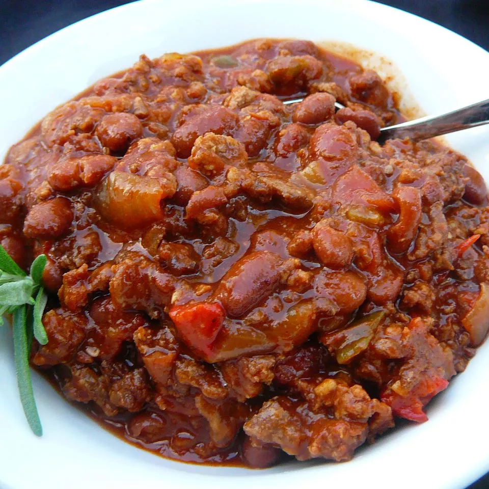

Boilermaker Tailgate Chili

Description
Ingredients:
- 2 pounds ground beef chuck
- 1 pound bulk Italian sausage
- 3 (15 ounce) cans chili beans, drained
- 1 (15 ounce) can chili beans in spicy sauce
- 2 (28 ounce) cans diced tomatoes with juice
Steps
- Heat a large stock pot over medium-high heat. Crumble ground chuck and sausage into the hot pan.
Cook, stirring frequently, until meat is evenly browned. Drain off excess grease.
- Pour in chili beans, spicy chili beans, diced tomatoes, and tomato paste.
- Taste and season with more salt, pepper, and chili powder if necessary.
- To serve, ladle hot chili into bowls and top with corn chips and Cheddar cheese.
Return to main page